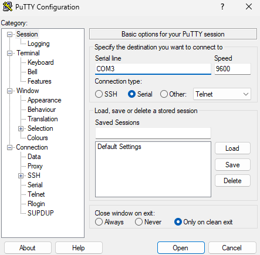
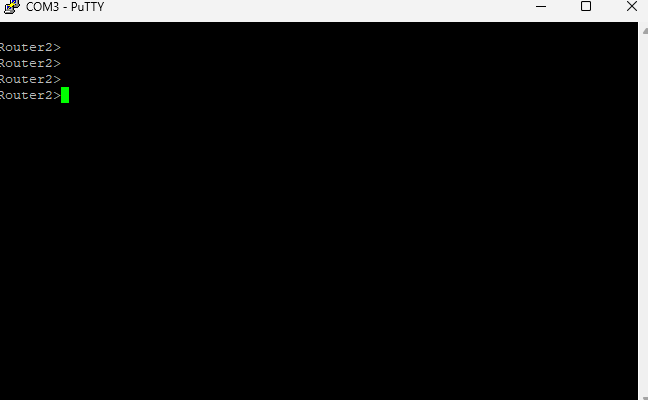
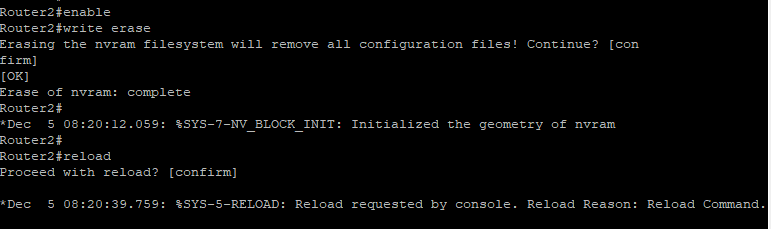

Connexion en console avec PuTTY
Pour configurer un routeur Cisco la première fois (sans réseau), on se connecte via le port Console avec un câble RS-232 (ou USB-Console). Sur le PC, on utilise PuTTY en mode Serial. Le port COM dépend de l'adaptateur utilisé, et la vitesse est généralement 9600 bauds.

Premiers accès à l'IOS
Une fois connecté, on arrive sur l'interface en ligne de commande Cisco IOS. Le prompt Router> indique le mode utilisateur. On passe en mode privilégié avec enable, puis en mode configuration globale avec configure terminal.

Router> enable Router# configure terminal Router(config)#
Configuration d'une interface
Pour configurer une interface (FastEthernet, GigabitEthernet), on entre dans son sous-mode de configuration, on attribue une adresse IP et un masque, et on active l'interface avec no shutdown. Sans no shutdown, l'interface reste désactivée.

Router(config)# interface FastEthernet0/0 Router(config-if)# ip address 192.168.1.1 255.255.255.128 Router(config-if)# duplex auto Router(config-if)# speed auto Router(config-if)# no shutdown
copy running-config startup-config (ou wr en raccourci). Sinon, la config est perdue au redémarrage.
Commandes utiles en IOS
Quelques commandes à retenir pour administrer un routeur Cisco :
show interfaces # état des interfaces show ip route # table de routage show running-config # configuration active ping 192.168.1.1 # test de connectivité traceroute 8.8.8.8 # traçage de route copy run start # sauvegarde de la config